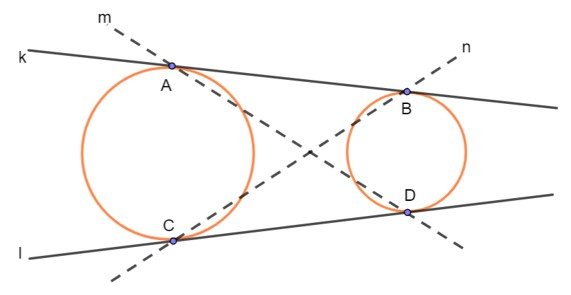
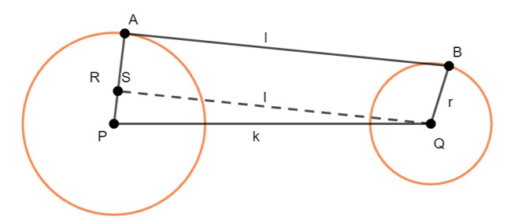
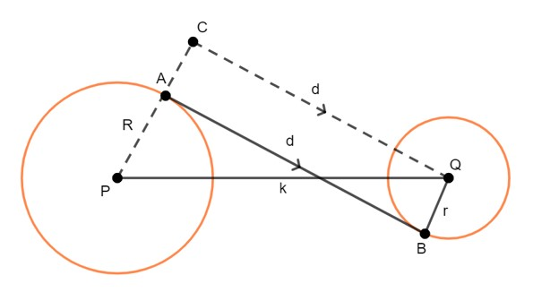
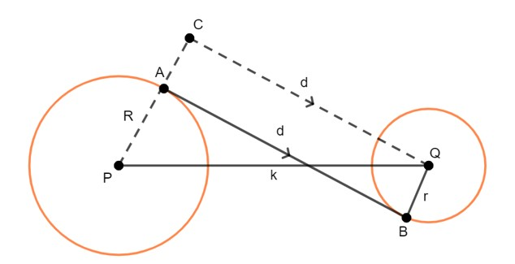

BAB 6
GARIS SINGGUNG PERSEKUTUAN DUA LINGKARAN
Kedudukan Dua Lingkaran
Kedudukan antara dua lingkaran dapat diketahui melalui jarak kedua pusat lingkaran dan jumlah/selisih panjang jari-jari lingkaran. Jarak kedua pusat lingkaran dapat dihitung menggunakan rumus jarak antara dua titik seperti yang diberikan pada bahasan di atas. Sedangkan jumlah atau selilisih panjang jari-jari dapat dihitung secara langsung.
Secara umum, kedudukan dua lingkaran dapat dikelompokkan menjadi tiga jenis, yaitu dua lingkaran bersinggungan, berpotongan, dan saling lepas. Macam-macam kedudukan dua lingkaran dapat diuraikan sebagai berikut.
-
Dua Lingkaran Bersinggungan

Gambar 37. Dua Lingkaran yang Bersinggungan
Gambar 37(a) memperlihatkan dua lingkaran yang bersinggungan di luar. Dalam kedudukan seperti ini dapat dibuat satu buah garis singgung persekutuan dalam, yaitu n dan dua garis singgung persekutuan luar, yaitu l dan m. Gambar 37(b) memperlihatkan dua lingkaran yang bersinggungan di dalam. Untuk kedudukan seperti ini dapat dibuat satu buah garis singgung persekutan luar, yaitu k dengan titik singgung A.
-
Letak titik pusat lingkaran pertama berada di titik P1 dan panjang jari-jari r1. Letak titik pusat lingkaran kedua berada di titik P2 dan panjang jari-jari r2. Jika |P1 P2| = r1 + r2 maka L1 dan L2 memiliki sebuah satu titik potong (bersinggungan).

Gambar 37(a). Dua Lingkaran yang Bersinggungan di Luar
Sebuah lingkaran dengan memiliki titik pusat P1 dan P2 dengan diameter r1 > r2. Jika |P1 P2| = r2 maka L1 dan L2 bersinggungan di dalam salah satu lingkaran.

Gambar 37(b). Dua Lingkaran yang Bersinggungan di Dalam
-
-
Dua Lingkaran Berpotongan
Dua lingkaran yang berpotongan seperti yang ditunjukkan oleh Gambar 38. mempunyai dua garis singgung persekutuan luar, yaitu r dan s

Gambar 38. Dua Lingkaran yang Berpotongan
Dua buah lingkaran memiliki letak di titik P1 dan titik P2 dengan jari-jari r1 dan r2. Jika r1 – r2 < |P1 P2| maka L1 berpotongan dengan L2 pada dua titik seperti yang ditunjukkan gambar berikut.

Gambar 38(a). Dua Lingkaran yang Berpotongan
Dua Lingkaran Saling Lepas
Gambar 39. memperlihatkan dua lingkaran yang saling lepas atau terpisah. Dalam kedudukan seperti ini, dapat dibuat dua garis persekutuan luar, yaitu k dan l dan dua garis persekutuan dalam, yaitu m dan n.

Gambar 39. Dua Lingkaran yang Saling Lepas
Dua buah lingkaran memiliki pusat yang terletek di titik P1 dan P2 dengan panjang jari-jari r1 dan r2. Jika jarak antara kedua pusat lingkaran |P1 P2| > r1 + r2 maka L1 dan L2 tidak bersinggugan. Gambar kedudukan antara dua lingkaran yang saling lepas (tidak bersinggungan) ditunjukkan seperti gambar berikut.

Gambar 39(a). Dua Lingkaran yang Saling Lepas
Untuk lebih memahami terkait macam-macam kedudukan dua lingkaran, perhatikanlah Applet GeoGebra berikut dengan saksama. Kemudian coba gerakkan slider-nya untuk melihat berbagai kedudukan dua lingkaran.
Applet GeoGebra
Kedudukan Dua Lingkaran
Garis Singgung Persekutuan Luar Dua Lingkaran
Perhatikanlah gambar berikut.

Gambar 40. Garis Singgung Persekutuan Luar
- Garis AB merupakan garis singgung persekutuan luar dua lingkaran yang berpusat di P dan Q.
- R = AP adalah jari-jari lingkaran yang berpusat di P atau lingkaran pertama. r = BQ adalah jari-jari lingkaran yang berpusat di Q atau lingkaran kedua.
- l adalah panjang garis singgung persekutuan luar AB.
- k adalah jarak antara kedua titik pusat P dan Q.
SQ merupakan translasi dari AB, sehingga panjang AB = panjang SQ = l.
Panjang SP = AP – BQ = R – r.
- AB sejajar SQ sehingga – BAP = – QSP = 90˚ (sehadap).
Sekarang, perhatikan ∆SPQ. Oleh karena – QSP = 90˚ maka kita bisa menggunakan teorema Pythagoras untuk mencari panjang SQ. ∆SPQ siku-siku di S sehingga:
PQ2 = SQ2 + SP2
SQ2 = (PQ2 - SP2)
l2 = k2 - (R-r)2 ; R>r
l = √(k2 - (R - r)2)
Jadi, panjang garis singgung persekutuan luar dua lingkaran adalah:
dengan:
l = panjang garis singgung persekutuan luar
k = jarak kedua titik pusat lingkaran
R = jari-jari lingkaran pertama
r = jari-jari lingkaran kedua
Contoh Soal:
Perhatikanlah gambar berikut.

Gambar 41. GSPL
Berdasarkan Gambar 45., jika AP = 7 cm, PQ = 13 cm, dan BQ = 2 cm serta AB adalah garis singgung persekutuan luar dua lingkaran yang berpusat di P dan Q. Maka tentukanlah panjang AB!
Jawab:
Dari gambar diperoleh:
jarak kedua titik pusat lingkaran, k = 17 cm
panjang jari-jari lingkaran pertama, R = 25 cm
panjang jari-jari lingkaran kedua, r = 17 cm
panjang garis singgung persekutuan luar = l
Sehingga:
l = √(k2 - (R-r)2) = √(172 - (25-17)2 = √(172 - 82) = √(289-64) = √225 = 15 cm
Garis Singgung Persekutuan Dalam Dua Lingkaran
Perhatikanlah gambar berikut.

Gambar 42. GSPD
- Garis AB merupakan garis singgung persekutuan dalam dua lingkaran yang berpusat di P dan di Q.
R = AP adalah jari-jari lingkaran yang berpusat di P atau lingkaran pertama dan r = BQ adalah jari-jari lingkaran yang berpusat di Q atau lingkaran kedua.
PS = AS + AP = BQ + AP = r +R = R + r.
- d adalah panjang garis singgung persekutuan dalam AB.
- k adalah jarak antara kedua titik pusat P dan Q.
- SQ merupakan translasi dari AB, sehingga SQ sejajar AB dan panjang SQ = panjang AB = d.
- Oleh karena SQ sejajar AB maka ∠PSQ = ∠PAB = 90˚.
Sekarang perhatikan ΔPSQ. Oleh karena ΔPSQ merupakan segitiga siku-siku dengan ∠PSQ = 90˚ maka kita bisa menggunakan teorema Pythagoras untuk mencari panjang SQ.
PQ2 = PS2 + SQ2
SQ2 = PQ2 - PS2
l2 = k2 - (R + r)2
l = √(k2 - (R + r)2)
Jadi, panjang garis singgung persekutuan dalam dua lingkaran adalah:
dengan:
d = panjang garis singgung persekutuan dalam
k = jarak kedua titik pusat lingkaran
R = jari-jari lingkaran pertama
r = jari-jari lingkaran kedua
Contoh Soal:
Jika diketahui PC adalah 14 cm, PQ 30 cm, dan BQ 4 cm. Maka tentukanlah garis singgung persekutuan dalamnya!

Gambar 43. Garis Singgung Persekutuan Dalam
Jawab:
Diketahui:
k = 30 cm
R = 14 cm
r = 4 cm
Sehingga:
d = √(k2 - (R+r)2) = √(302 - (14 + 4)2) = √(302 - 182) = √576 = 24 cm
Ringkasan
- Secara umum, kedudukan dua lingkaran dapat dikelompokkan menjadi tiga jenis, yaitu dua lingkaran bersinggungan, berpotongan, dan saling lepas.
- Panjang garis singgung persekutuan luar dua lingkaran adalah: √(k2 - (R - r)2 ) ; R>r
- Panjang garis singgung persekutuan dalam dua lingkaran adalah: d = √(k2 - (R + r)2)
Latihan
Kerjakanlah soal-soal berikut ini dengan benar!
- Sebutkan macam-macam kedudukan lingkaran!
- Panjang garis singgung persekutuan dalam dua lingkaran adalah 15 cm dan kedua titik pusatnya terpisah sejauh 17 cm. Jika panjang jari-jari salah satu lingkaran adalah 3 cm, tentukan panjang jari-jari lingkaran yang lain.
- Jika sebuah lingkaran O berjari-jari 7 cm dan lingkaran P berjari-jari 5 cm. Tentukan panjang garis singgung persekutuan luar AB! (Kedua lingkaran bersinggungan di luar).
- Panjang jari-jari dua lingkaran adalah 11 cm dan 2 cm. Jika panjang garis singgung persekutuan luarnya adalah 12 cm maka tentukanlah jarak kedua pusat lingkarannya!
- Panjang garis singgung persekutuan dalam dua lingkaran adalah 16,94 cm dan jarak kedua pusatnya adalah 24 cm. Jika panjang salah satu jari-jari lingkaran adalah 12 cm, maka hitunglah panjang jari-jari lingkaran yang lain!
Pembahasan:
- Kedudukan dua lingkaran dapat dikelompokkan menjadi tiga macam, yaitu dua lingkaran bersinggungan, berpotongan, dan saling lepas.
-
Panjang garis singgung persekutuan dalam adalah 15 cm maka d = 15 cm.
Jarak kedua titik pusatnya adalah 17 cm maka k = 17 cm.
Panjang jari-jari (R) salah satu lingkaran adalah 3 cm maka R = 3 cm.
Sehingga:
d = √(k2 - (R+r)2)
15 = √(172 - (3+r)2)
152 = 172 - (3 + r)2
225 = 289 - (3 + r)2
(3 + r)2 = 289 - 225
(3 + r)2 = 64
3 + r = √64
3 + r = 8
r = 8 - 3
r = 5 cm
-
Dari soal diketahui:
AO = R = 7 cm BP = r = 5 cm
Kedua lingkaran bersinggungan di luar sehingga jarak kedua titik pusat lingkaran adalah:
OP = R + r = 7 + 5 = 12 cm maka:
AB = √(OP2 - (R - r)2)
AB = √(122 - (7 - 5)2)
AB = √(144 - 22)
AB = √140
AB = 2√35
-
Diketahui:
l = 12 cm
R = 11 cm
r = 2 cm
Ditanyakan: k = ?
Penyelesaian:
l = √(k2 - (R - r)2)
l2 = k2 - (R - r)2
122 = k2 - (11 - 2)2
144 = k2 - (9)2
144 = k2 - 81
k2 = 144 + 81
k2 = 225
k = √225
k = 15 cm
Jadi, jarak kedua pusat lingkarannya adalah k = 15 cm
-
Diketahui:
d = 16,94 cm
k = 24 cm
R = 12 cm
Ditanyakan: r = ?
Penyelesaian:
d = √(k2 - (R + r)2)
d2 = k2 - (R + r)2
(16,94)2 = 242 - (12 + r)2
286,9636 = 576 -(12 + R)2
(12 + R)2 = 576 - 286,9636
(12 + R)2 = 289,0364
12 + R = √289,0364
12 + R = 17,001
R = 17,001 - 12
R = 5,001 cm
Evaluasi
Kerjakanlah soal-soal berikut ini dengan jawaban yang benar!
- Diketahui dua lingkaran dengan jari-jari 14 cm dan 4 cm. Tentukan panjang garis singgung persekutuan dalam kedua lingkaran tersebut jika jarak antara kedua titik pusatnya adalah 30 cm.
- Dua buah lingkaran berjari-jari masing-masing 2 cm dan 7 cm. Jika jarak kedua pusat lingkaran 15 cm, maka panjang garis singgung persekutuan dalam kedua lingkaran tersebut adalah . . . . cm.
- Gambarkanlah dua lingkaran yang berpotongan dengan jari-jari diameter pertama adalah 21 cm dan jari-jari lingkaran kedua adalah 14 cm!
- Diketahui jarak dua pusat lingkaran adalah 34 cm, dan panjang jari-jari lingkaran A sama dengan dua kali panjang jari-jari lingkaran B. Jika panjang garis singgung persekutuan dalam kedua lingkaran tersebut adalah 16 cm, maka selisih panjang jari-jari kedua lingkaran tersebut adalah . . . . cm.
- Jika jarak antara dua titik pusat lingkaran adalah 17 cm dan jari-jari kedua lingkaran adalah 17 cm dan 9 cm maka hitunglah panjang garis singgung persekutuan luarnya!